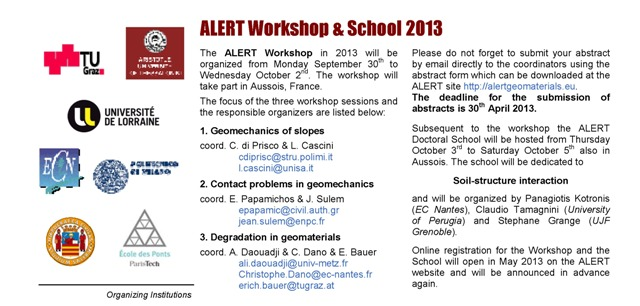

LARAM Initiatives
backup copy of webpage www.laram.unisa.it (last updated 11.11.2026)
Initiatives
- Community
- Initiatives
- Aims
- LARAM Meeting 2026 at WLF7
- ALERT Workshop 2026
- 22nd ISGDR, July 2024
- LARAM Meeting 2023 at WLF6
- ALERT Workshop 2021
- Meet the Experts: LARAM 2017
- ALERT 2016 - 8th OZ Course
- Asia Academic Trip 2015
- PRIN Conference 2014
- ALERT Workshop 2013
- AXA 2013 Calls for Post-Doc
- PRIN Conference 2012
- SAFELAND (EU FP7 project)
- Workshop
- School
- Mission
- LARAM Course 2027 ................. in Kathmandu (Nepal)
- LARAM School 2026 .................. in Lausanne (Switzerland)
- LARAM Course 2026 ................. in Mandi (India)
- LARAM School 2025
- LARAM Course 2025 ................. in Hong Kong (China)
- LARAM School 2024
- LARAM School 2023
- LARAM School 2022 hybrid
- LARAM School 2021 on line
- LARAM School 2020 on line
- LARAM Course 2020 ................. in Roorkee (India)
- LARAM School 2019 .................. in Lausanne (Switzerland)
- LARAM School 2018
- LARAM School 2017
- LARAM School 2016
- LARAM School 2015 ................. in Chengdu (China)
- LARAM School 2014
- LARAM School 2013
- LARAM School 2012 ................. in Chengdu (China)
- LARAM School 2011 ................. in Chengdu (China)
- LARAM Course 2011
- LARAM School 2010
- LARAM School 2009
- LARAM School 2008
- LARAM School 2007
- LARAM School 2006
- LARAM

ALERT Geomaterials

ALERT Workshop 2013 - Session on Geomechanics in slopes
ALERT Workshop 2013
30st September - 2nd October 2013, Aussois, France
DAY 1, MONDAY, SEPTEMBER 30
Geomechanics in slopes
Coordinators: C. di Prisco and L. Cascini
- From phenomenological to a geomechanical approach to landslide risk analysis and management (F. Cotecchia)
- Hydromechanical hillslope processes triggering landslides (R. Borja)
- Back-analysis of flowside events in underwater sandy slopes: a methodology based on stability criteria for fluid-saturated soils (G. Buscarnera, C. Mihalanche, A. Whittle)
- Interpretation of landslide mechanisms based on numerical modelling: two case histories (P. Lollino, F. Cotecchia)
- Multi-physics modelling of the initiation of shallow landslides based on Porous Media Mechanics (L. Sanavia, R. Ngaradoumbe Nanhornguè, B.A. Schrefler, G. Sorbino, L. Cascini)
- Landslide mechanisms and structural damage assessment: geotechnical perspectives (C. Vitone, F. Palmisano, F. Cotecchia, F. Santaloia)
- Multiscale approach for predicting slope instability (F. Nicot, F. Darve)
- Evaluation of displacement patterns during an excavation using different constitutive models (K. Nitzsche, I. Herle)
- A new approach for mudflow global simulation (N. Prime, F. Dufour, F. Darve)
- DEM modelling of the impact forces against fixed vertical obstacles due to fast-moving landslides (F. Calvetti, E. Vitolo, L.Cascini, S. Ferlisi, C. di Prisco, E. Vairaktaris)
- New advances for modelling debris flows and debris avalanches (S. Cuomo, L. Cascini, M. Pastor, G.C. Castorino, L. Piciullo)
- Discrete Element Method combined with a Lattice-Boltzmann Fluid model for the simulation of debris flowseady (A. Leonardi, F.K. Wittel, M. Mendoza, H.J. Herrmann)
More info:
http://alertgeomaterials.eu/data/newsletter/20140219_Nwslttr2014_ALERT.pdf
http://alertgeomaterials.eu/presentations-of-the-alert-workshop-2013/
